Structured Recovery Operations for Missing Pets.
Shifting from random searching to targeted, professional recovery. A successful recovery isn't about searching harder—it's about searching smarter. When companion animals go missing across London, we apply behavioral profiling, environmental terrain mapping, and silent night tracking to bring them home.
Available 24 hours across all London Boroughs • Direct line: 07459 887616
Targeted recovery within 48h
Documented case stories below
Silent motion sensors & lures
Day and night field coverage
Hard Effort vs. Smart Strategy
Frantic calling and random searching actually push frightened pets deeper into hiding. Here is how a structured recovery fundamentally changes the outcome.
The Random Search
The Structured Recovery
Our Three-Step Recovery Process
Every recovery is carried out using dedicated field equipment, familiar scents, and patient nocturnal monitoring.
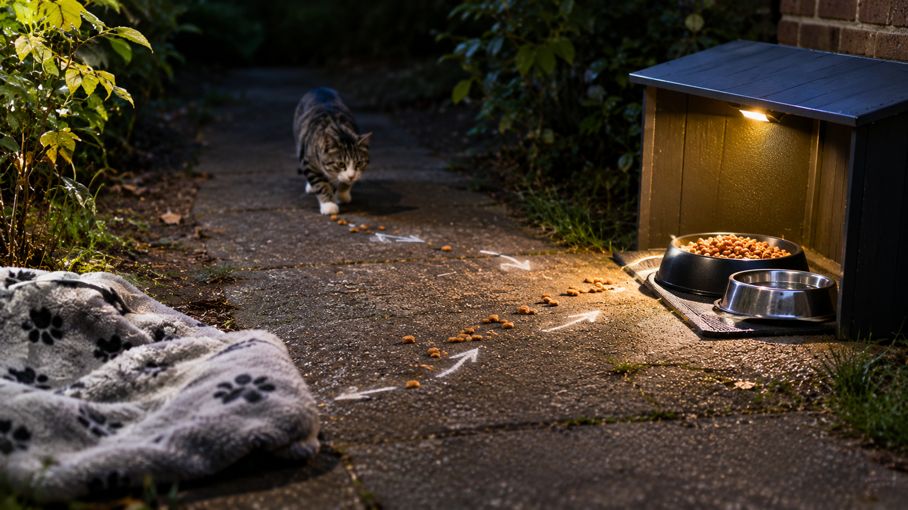
Scent Trails & Safe Feeding Stations
Frightened animals enter survival mode—they won't come running, but their sense of smell remains active. We lay calibrated scent trails using their familiar blanket and clothing, leading directly to a sheltered feeding box with water and food to gently guide them to safety without alarming them.
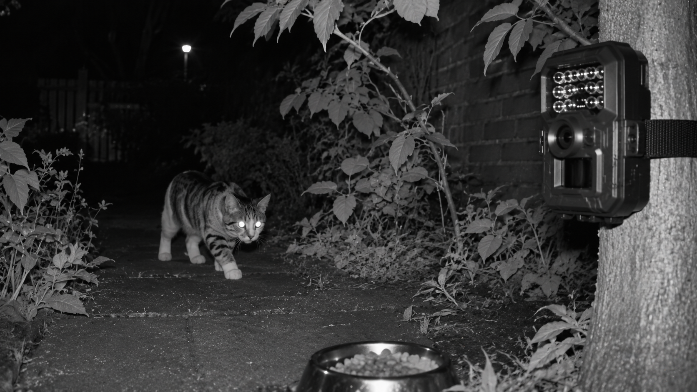
Night-Vision Trail Cameras
Lost pets rarely move in daytime traffic. Between midnight and 5:00 AM—when streets quiet down—they emerge to search for water. We install silent, motion-triggered infrared night cameras along garden fences and alleyways to log their exact position without disturbing or chasing them.
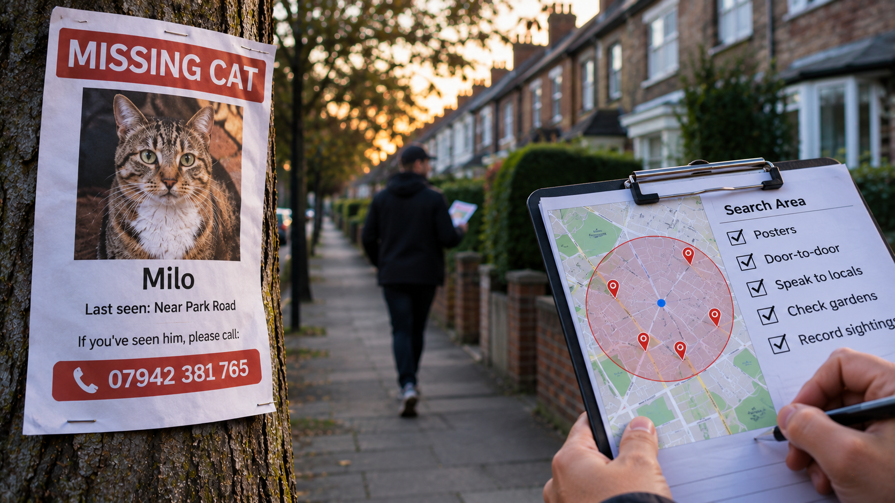
Targeted Canvassing & Area Mapping
We don't post random flyers across miles of London. We establish a disciplined search radius checklist: checking neighbor sheds, garages, and enclosed outbuildings with owners' permission, while putting high-contrast missing posters on key street corners to turn the community into focused spotters.
Frightened Animals Abandon Normal Behaviors
Understanding how your pet reacts to acute fear is the essential first step before setting foot outside.
Feline Behavior Under Stress
Indoor & Outdoor CatsConfident, vocal, affectionate, and socially responsive.
Extremely withdrawn and mute. Hides in tight physical compression pockets (under decks, sheds, sub-floors). Avoids familiar people and will not meow or respond even when you are standing two feet away calling their name.
Canine Behavior Under Stress
Lost or Slipped LeadResponsive, grounded, and seeks owner connection.
Travels considerable distances. Becomes disoriented, runs in erratic paths, and responds unpredictably to unfamiliar people. Chasing or shouting causes them to bolt across traffic into greater danger.
Immediate Priorities for Pet Owners
Follow these four rules immediately while we coordinate your recovery.
1. Record the Exact Data
Log the precise time, exact street or garden, and environmental factors of the last confirmed sighting before memories blur.
2. Prepare Clear Photos
Have high-resolution full-body photos ready showing unique markings, fur patterns, eye color, and collar details.
3. Demand Spotter Precision
When anyone calls in a sighting, ask for the exact cross-street, direction they were traveling, and precise time.
4. Maintain Search Control
Prevent well-meaning friends from roaming loudly in groups. Multiple searchers are only helpful if they follow a coordinated map.
18 Pets Reunited With Their Owners
Real documented cases across London boroughs where calm, structured search brought them safely home.
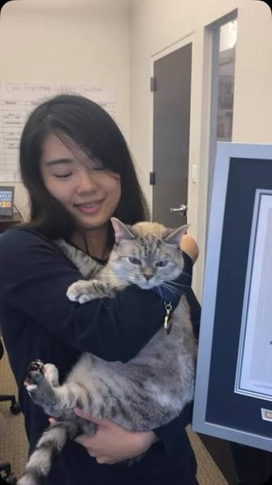
Milo
Home in 26 hoursSafe feeding station & quiet night search
"We were beside ourselves after 36 hours. He arrived late at night, set up cameras quietly, and had Milo back in our arms before dawn. Absolutely amazing service."
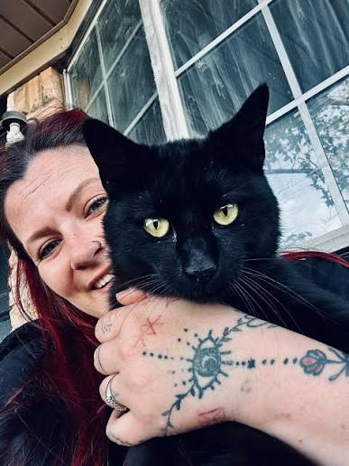
Luna
Home in 19 hoursNight camera spotted her at 3:15 AM
"No loud shouting or panic—he told us exactly what to do and how to avoid scaring her. The camera spotted her at 3:15 AM and we had her home by breakfast."
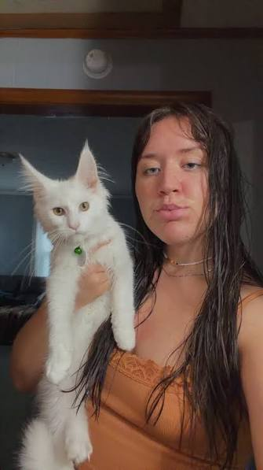
Jasper
Home in 34 hoursFound under neighboring garden decking
"He told us indoor cats almost always hide within 50 meters. He checked under our neighbor's decking and found Jasper tucked away quietly. Lifesaver."
Cleo
Home in 41 hoursGentle scent luring back to garden
"When other places told us there was nothing to do but wait, he stepped in immediately. His calm guidance kept us from losing hope completely."
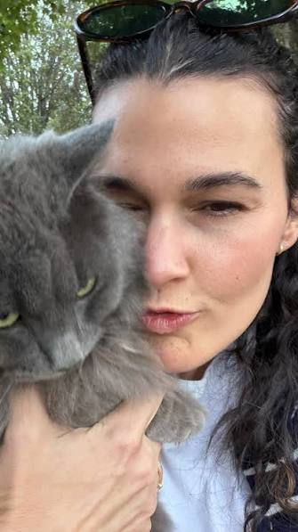
Barnaby
Home in 14 hoursEnclosed garden search
"Watching him search with such care and quiet confidence was amazing. Barnaby was brought back without any stress or injuries."
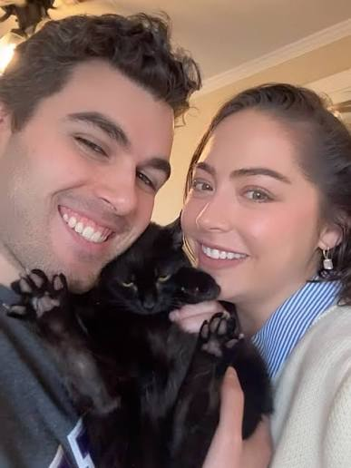
Oscar
Home in 52 hoursExtracted from garage gap
"Oscar got wedged in an inaccessible space behind old garages. The rescue was gentle, zero harm, and totally reassuring from start to finish."
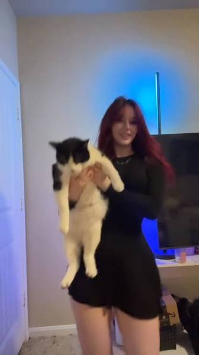
Coco
Home in 11 hoursStopped before busy main road
"With Central London traffic, every minute counted. He secured Coco safely before she wandered toward the busy avenue. Immensely grateful."
Felix
Home in 68 hoursSpotted sheltering near railway arches
"Four days missing in the rain had us convinced we would never see him. The night camera picked him up and he was safely caught within hours."
Bella
Home in 22 hoursFound nestled in dense shrubbery
"The sheer relief when he showed us the camera footage of Bella eating at the station was indescribable. So patient and caring."
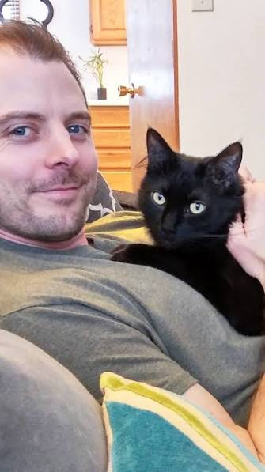
Archie
Home in 29 hoursQuiet canal path search
"We had spent days walking up and down the canal calling him. He told us to stop calling and let the scent station do the work. It worked like a charm."
Oliver
Home in 18 hoursQuiet garden boundary search
"He was calm, polite, and so knowledgeable about animal habits. He found Oliver resting quietly by the adjoining estate fence."
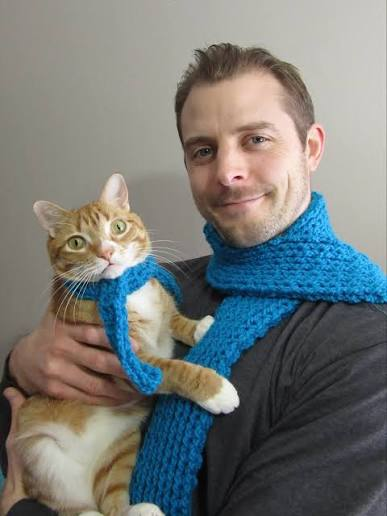
Ziggy
Home in 15 hoursRetrieved from high fire escape
"Ziggy was stuck on a third-floor parapet, terrified to move. He brought him down safely and gently in minutes. Unbelievable relief."
Simba
Home in 31 hoursLocated in quiet basement area
"Quiet, considerate search in a busy Victorian mews. Zero commotion, zero fuss, and Simba was safely back in our flat by 2:00 AM."
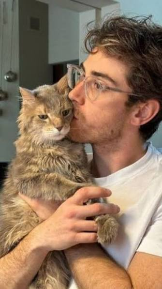
Pip & Poppy
Home in 38 hoursBoth bonded siblings recovered
"Recovering two bonded siblings who ran off together felt nearly impossible. He helped us recover both cats safe and sound."
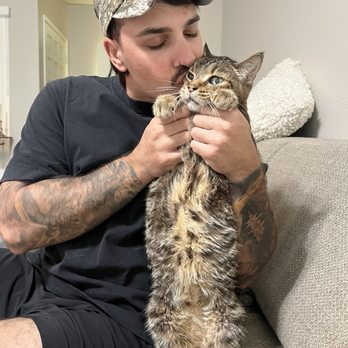
Theo
Home in 27 hoursKept away from nearby railway line
"Theo was spooked by builders next door. His guidance prevented him from bolting toward the train tracks. So relieved to have him back."
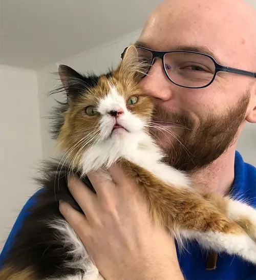
Boris
Home in 45 hoursFound sheltered in allotment shed
"He searched local allotments after dark with night cameras and found Boris sheltered dry and unharmed in an old water butt. Wonderful help."

Monty
Home in 24 hoursLocated in nearby garden space
"We were convinced someone had taken him. He proved Monty was still within 40 meters hiding in a bush. So calm and reassuring throughout."
Winston
Home in 33 hoursTargeted local flyer lead
"Targeted flyers on nearby lamp posts prompted a neighbor to call in that evening. He set up a safe camera right away and Winston was back the next morning."
Turn Uncertainty Into a Structured Recovery Operation
You don't need to have all the answers before contacting us. That's what we are here for. Fill in your details below or call directly on 07459 887616.